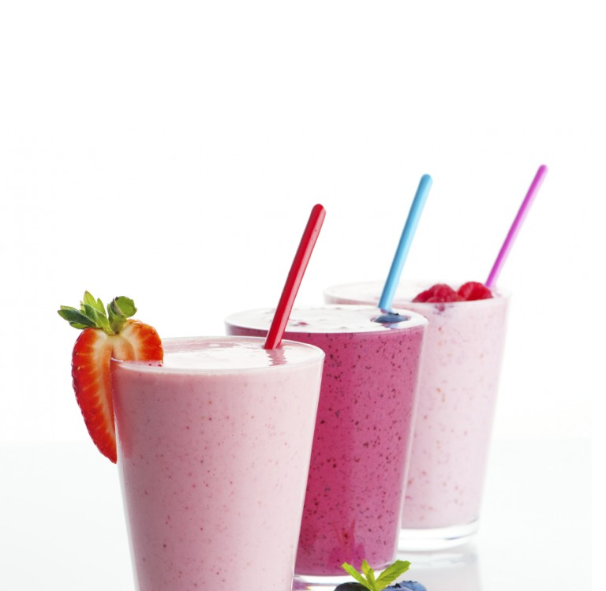

Resep Hari ini
Smooties Strawberry

Bahan-bahan
250 gram buah strawberry
1000 cc susu fat free
8 sdm gula
es batu secukupnya
1/2 kaleng skm cokelat
Cara Membuat
Semua bahan jadikan satu lalu di blender.
Tuang dalam gelas tambahkan hiasan potongan buah strawberry
Siap di sajikan
Tips :
Sajikan sesgera setelah dibuat
Hasil jadi sekitar 4 gelas